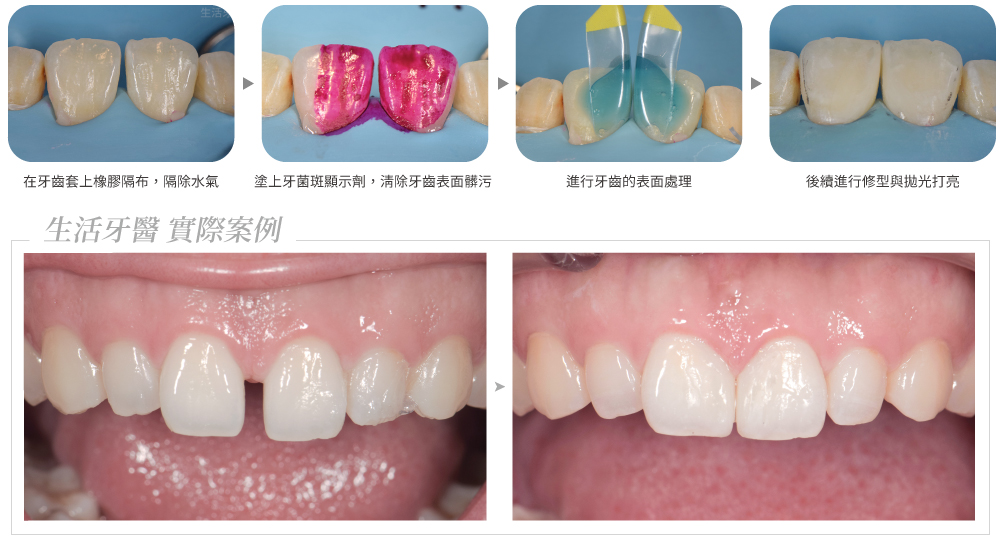
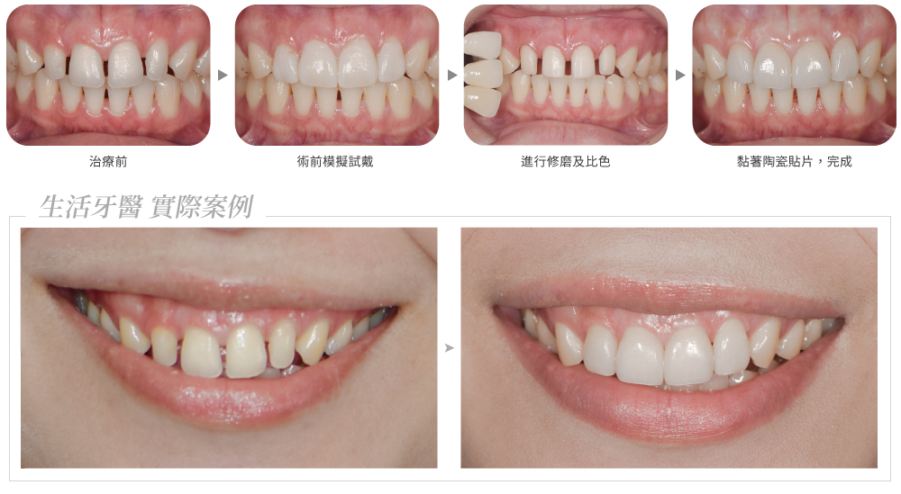
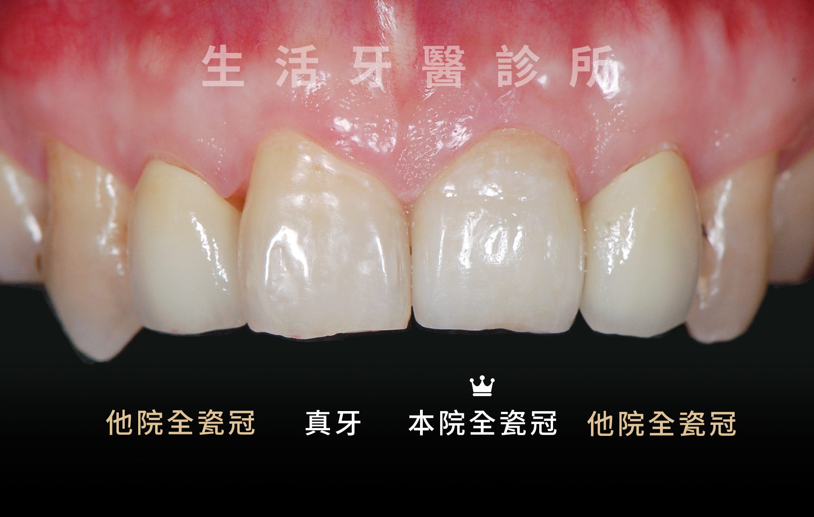
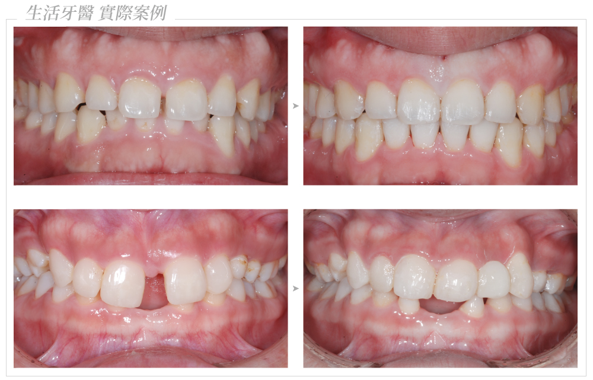

門牙中間有縫、牙縫太大，常會讓人在笑或說話時特別在意。很多人第一個想到的是「能不能直接補起來」，但牙縫形成原因不同，適合的治療方式也不一樣。
常見原因包含牙齒本身偏小、牙弓空間較大、唇繫帶位置影響、牙周病造成牙齒位移、缺牙後齒列改變，或舌頭推擠、咬合習慣導致縫隙變大。治療前先釐清原因，才能讓補牙縫不只好看，也更穩定耐用。
門牙牙縫常見原因
牙縫不是單純「把空隙填起來」就一定適合。若沒有先確認牙齒比例、牙周健康與咬合力量，有些縫補完可能看起來牙齒過寬，或使用一段時間後又崩裂、染色、縫隙復發。
牙齒比例偏小
牙齒寬度不足或側門牙較小，可能讓門牙之間或前牙區出現明顯空隙。
牙周與齒列變化
牙周支撐變弱、缺牙未處理或齒列移位，都可能讓原本密合的牙縫逐漸變大。
唇繫帶或習慣影響
唇繫帶位置、舌頭推擠、咬合干擾等因素，可能讓門牙縫隙較難自然關閉。
1. 樹脂補牙縫：快速改善小牙縫

若牙縫不大、牙齒排列大致整齊，且咬合力量不會直接衝擊修補處，醫師可能會評估以複合樹脂補牙縫。這類治療通常可以在較短時間內完成，修磨量較少，也能立即看到外觀改善。
不過樹脂會隨時間染色、磨耗或邊緣變粗糙，若常喝咖啡、茶、紅酒，或有啃咬硬物習慣，可能需要定期拋光或重新修補。
樹脂補牙縫適合小範圍修飾，但若縫隙太大，直接補起來可能讓牙齒比例變得過寬。
2. 陶瓷貼片：兼顧牙色與比例

陶瓷貼片適合想同時改善牙縫、牙齒形狀、牙色與微笑比例的人。醫師會依照臉型、唇線、牙齒長寬比與笑線設計貼片形態，讓牙縫關閉後仍保有自然比例。
相較樹脂，陶瓷貼片的色澤穩定度與耐磨性較佳，也較不容易染色。治療前需評估齒質厚度、咬合力量與牙齦線，若有磨牙、深咬或牙周問題，通常會先處理穩定後再進行美學修復。
適合情況
前牙縫隙合併牙色偏黃、形態不理想、牙齒比例偏小，或希望一次調整笑容協調度。
注意事項
貼片仍需避免啃咬硬物，也需要維持牙線與定期回診，才能讓邊緣與牙齦維持健康。
3. 全瓷冠：適合齒質破損較多者

如果門牙本身已經有大範圍蛀牙、舊填補物、根管治療後變色，或齒質強度不足，單純樹脂或陶瓷貼片不一定能提供足夠保護。此時醫師可能會評估全瓷冠修復，同時改善牙縫、色澤與牙齒外形。
全瓷冠包覆範圍較大，能提供較完整的保護，但也需要較多齒質修整。因此是否選擇全瓷冠，關鍵不只是美觀，而是牙齒剩餘結構是否需要更完整的支撐。
4. 矯正治療：從齒列位置根本改善

若牙縫是因為牙齒排列、牙弓空間、咬合關係或牙齒位移造成，矯正治療通常比直接補牙縫更能從根本改善。包含傳統矯正、隱形矯正等方式，都可以依照牙齒移動需求規劃。
- 多顆牙齒都有縫，或牙齒排列不整齊。
- 門牙縫隙很大，直接補起來比例會不自然。
- 牙齒因缺牙、牙周或咬合問題逐漸位移。
- 希望改善咬合功能，而不只是關閉表面縫隙。
5. 治療前要評估哪些事？
想補牙縫前，醫師通常會檢查牙周狀況、蛀牙與舊補綴物、牙齒比例、咬合力量、是否磨牙，以及患者對顏色與形狀的期待。若牙縫來源是牙周病或咬合不穩，會建議先把基礎問題處理好，再進行美學修復。
看牙齒比例
關閉牙縫後，牙齒不能只追求沒有縫，也要看長寬比例、左右對稱與笑線是否協調。
看咬合與牙周
若咬合力量集中或牙周支撐不穩，補牙縫後仍可能鬆動、崩裂或縫隙再次變大。
門牙有縫，不一定只能用一種方式處理
小範圍牙縫可評估樹脂補牙縫；想同時改善牙色與牙型，可考慮陶瓷貼片；若齒質破損較多，可能需要全瓷冠；若牙縫來自齒列或咬合問題，矯正治療會是更根本的選項。建議先由醫師完整評估，再依照牙齒條件、預算、治療時間與美觀期待，選擇最適合的方案。